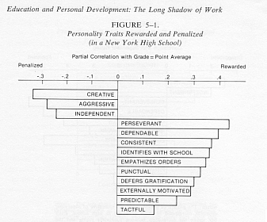
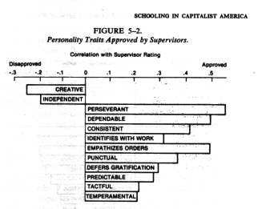
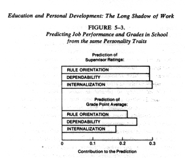

This reading is from: SCHOOLING IN CAPITALIST AMERICA by Samuel Bowles and Herbert Gintis. New York: Basic Books, Inc., Publishers, 1976.
FROM: CHAPTER 5: "EDUCATION AND PERSONAL DEVELOPMENT -- THE LONG SHADOWN OF WORK
from Pages 125-148.
EDUCATION AND PERSONAL DEVELOPMENT: THE LONG SHADOW OF WORK
Every child born into the world should be looked upon by society as so much raw material to be manufactured. Its quality is to be tested. It is the business of society, as an intelligent economist, to make the best of it.Lester Frank Ward
EDUCATION, c. 1872
...In our view, it is pointless to ask if the net effect of U.S. education is to promote equality or inequality, repression or liberation. These issues pale into insignificance before the major fact: The educational system is an integral element in the reproduction of the prevailing class structure of society. The educational system certainly has a life of its own, but the experience of work and the nature of the class structure are the bases upon which educational values are formed, social justice assessed, the realm of the possible delineated in people's consciousness, and the social relations of the educational encounter historically transformed.
In short, and to return to a persistent theme of this book, the educational system's task of integrating young people into adult work roles constrains the types of personal development which it can foster in ways that are antithetical to the fulfillment of its personal developmental function.
Reproducing Consciousness
... children guessed (but only a few and down they forgot as up they grew autumn winter spring summer) ....
e e cummings, 1940
Economic life exhibits a complex and relatively stable pattern of power and property relationships. The perpetuation of these social relationships, even over relatively short periods, is by no means automatic. As with a living organism, stability in the economic sphere is the result of explicit mechanisms constituted to maintain and extend the dominant patterns of power and privilege. We call the sum total of these mechanisms and their actions the reproduction process.
Amidst the sundry social relations experienced in daily life, a few stand out as central to our analysis of education. These are precisely the social relationships which are necessary to the security of capitalist profits and the stability of the capitalist division of labor. They include the patterns of dominance and subordinacy in the production process, the distribution of ownership of productive resources, and the degrees of social distance and solidarity among various fragments of the working population-men and women, blacks and whites, and white-and blue-collar workers, to mention some of the most salient.
What are the mechanisms of reproduction of these aspects of the social relations of production in the United States? To an extent, stability is embodied in law and backed by the coercive power of the state. Our jails are filled with individuals who have operated outside the framework of the private-ownership market system. The modern urban police force as well as the National Guard originated, in large part, in response to the fear of social upheaval evoked by militant labor action. Legal sanction, within the framework of the laws of private property, also channels the actions of groups (e.g., unions) into conformity with dominant power relationships. Similarly, force is used to stabilize the division of labor and its rewards within an enterprise: Dissenting workers are subject to dismissal and directors failing to conform to "capitalist rationality" will be replaced.
But to attribute reproduction to force alone borders on the absurd. Under normal conditions, the effectiveness of coercion depends at the very least on the inability or unwillingness of those subjected to it to join together in opposing it. Laws generally considered illegitimate tend to lose their coercive power, and undisguised force too frequently applied tends to be self-defeating. The consolidation and extension of capitalism has engendered struggles of furious intensity. Yet instances of force deployed against a united and active opposition are sporadic and have usually given way to détente in one form or another through a combination of compromise, structural change, and ideological accommodation. Thus it is clear that the consciousness of workers-beliefs, values, self-concepts, types of solidarity and fragmentation, as well as modes of personal behavior and development-are integral to the perpetuation, validation, and smooth operation of economic institutions. The reproduction of the social relations of production depends on the reproduction of consciousness.
Under what conditions will individuals accept the pattern of social relationships that frame their lives? Believing that the long-term development of the existing system holds the prospect of fulfilling their needs, individuals and groups might actively embrace these social relationships. Failing this, and lacking a vision of an alternative that might significantly improve their situation, they might fatalistically accept their condition. Even with such a vision they might passively submit to the framework of economic life and seek individual solutions to social problems if they believe that the possibilities for realizing change are remote. The issue of the reproduction of consciousness enters each of these assessments.
The economic system will be embraced when, first, the perceived needs of individuals are congruent with the types of satisfaction the economic system can objectively provide. While perceived needs may be, in part, biologically determined, for the most part needs arise through the aggregate experiences of individuals in the society. Thus the social relations of production are reproduced in part through a harmony between the needs which the social system generates and the means at its disposal for satisfying these needs.
Second, the view that fundamental social change is not feasible, unoperational, and utopian is normally supported by a complex web of ideological perspectives deeply embedded in the cultural and scientific life of the community and reflected in the consciousness of its members. But fostering the "consciousness of inevitability" is not the office of the cultural system alone. There must also exist mechanisms that systematically thwart the spontaneous development of social experiences that would contradict these beliefs.
Belief in the futility of organizing for fundamental social change is further facilitated by social distinctions which fragment the conditions of life for subordinate classes. The strategy of "divide and conquer" has enabled dominant classes to maintain their power since the dawn of civilization. Once again, the splintered consciousness of a subordinate class is not the product of cultural phenomena alone, but must be reproduced through the experiences of daily life.
Consciousness develops through the individual's direct perception of and participation in social life. Indeed, everyday experience itself often acts as an inertial stabilizing force. For instance, when the working population is effectively stratified, individual needs and self-concepts develop in a correspondingly fragmented manner. Youth of different racial, sexual, ethnic, or economic characteristics directly perceive the economic positions and prerogatives of "their kind of people." By adjusting their aspiration accordingly, they not only reproduce stratification on the level of personal consciousness, but bring their needs into (at least partial) harmony with the fragmented conditions of economic life. Similarly, individuals tend to channel the development of their personal powers--cognitive, emotional, physical, aesthetic, and spiritual-in directions where they will have an opportunity to exercise them. Thus the alienated character of work, for example, leads people to guide their creative potentials to areas outside of economic activity: consumption, travel, sexuality, and family life. So needs and need-satisfaction again tend to fall into congruence and alienated labor is reproduced on the level of personal consciousness.
But this congruence is continually disrupted. For the satisfaction of needs gives rise to new needs. These new needs derive from the logic of personal development as well as from the evolving structure of material life, and in turn undercut the reproduction of consciousness. For this reason the reproduction of consciousness cannot be the simple unintended by-product of social experience. Rather, social relationships must be consciously organized to facilitate the reproduction of consciousness.
Take, for instance, the organization of the capitalist enterprise discussed in Chapter 3. Power relations and hiring criteria within the enterprise are organized so as to reproduce the workers' self-concepts, the legitimacy of their assignments within the hierarchy, a sense of the technological inevitability of the hierarchical division of labor itself, and the social distance among groups of workers in the organization. Indeed, while token gestures towards workers' self-management may be a successful motivational gimmick, any delegation of real power to workers becomes a threat to profits because it tends to undermine patterns of consciousness compatible with capitalist control. By generating new needs and possibilities, by demonstrating the feasibility of a more thoroughgoing economic democracy, by increasing worker solidarity, an integrated and politically conscious program of worker involvement in decision-making may undermine the power structure of the enterprise. Management will accede to such changes only under extreme duress of worker rebellion and rapidly disintegrating morale, if at all.
But the reproduction of consciousness cannot be insured by these direct mechanisms alone. The initiation of youth into the economic system is further facilitated by a series of institutions, including the family and the educational system, that are more immediately related to the formation of personality and consciousness. Education works primarily through the institutional relations to which students are subjected. Thus schooling fosters and rewards the development of certain capacities and the expression of certain needs, while thwarting and penalizing others. Through these institutional relationships, the educational system tailors the self-concepts, aspirations, and social class identifications of individuals to the requirements of the social division of labor.
The extent to which the educational system actually accomplishes these objectives varies considerably from one period to the next. We shall see in later chapters that recurrently through U.S. history these reproduction mechanisms have failed, sometimes quite spectacularly. In most periods-and the present is certainly no exception-efforts to use the schools to reproduce and extend capitalist production relations have been countered both by the internal dynamic of the educational system and by popular opposition.
In earlier chapters we have identified the two main objectives of dominant classes in educational policy: the production of labor power and the reproduction of those institutions and social relationships which facilitate the translation of labor power into profits. We may now be considerably more concrete about the way that educational institutions are structured to meet these objectives. First, schooling produces many of the technical and cognitive skills required for adequate job performance. Second, the educational system helps legitimate economic inequality. As we argued in the last chapter, the objective and meritocratic orientation of U.S. education, reduces discontent over both the hierarchical division of labor and the process through which individuals attain position in it. Third, the school produces, rewards, and labels personal characteristics relevant to the staffing of positions in the hierarchy. Fourth, the educational system, through the pattern of status distinctions it fosters, reinforces the stratified consciousness on which the fragmentation of subordinate economic classes is based.
What aspects of the educational system allow it to serve these various functions? We shall suggest in the next section that the educational system's ability to reproduce the consciousness of workers lies in a straight-forward correspondence principle: For the past century at least, schooling has contributed to the reproduction of the social relations of production largely through the correspondence between school and class structure.
Upon the slightest reflection, this assertion is hardly surprising. All major institutions in a "stable" social system will direct personal development in a direction compatible with its reproduction. Of course, this is not, in itself, a critique of capitalism or of U.S. education. In any conceivable society, individuals are forced to develop their capacities in one direction or another. The idea of a social system which merely allows people to develop freely according to their "inner natures" is quite unthinkable, since human nature only acquires a concrete form through the interaction of the physical world and preestablished social relationships.
Our critique of education and other aspects of human development in the United States fully recognizes the necessity of some form of socialization. The critical question is: What for? In the United States the human development experience is dominated by an undemocratic, irrational, and exploitative economic structure. Young people have no recourse from the requirements of the system but a life of poverty, dependence, and economic insecurity. Our critique, not surprisingly, centers on the structure of jobs. In the U.S. economy work has become a fact of life to which individuals must by and large submit and over which they have no control. Like the weather, work "happens" to people. A liberated, participatory, democratic, and creative alternative can hardly be imagined, much less experienced. Work under capitalism is an alienated activity.
To reproduce the social relations of production, the educational system must try to teach people to be property subordinate and render them sufficiently fragmented in consciousness to preclude their getting together to shape their own material existence. The forms of consciousness and behavior fostered by the educational system must themselves be alienated, in the sense that they conform neither to the dictates of technology in the struggle with nature, nor to the inherent developmental capacities of individuals, but rather to the needs of the capitalist class. It is the prerogatives of capital and the imperatives of profit, not human capacities and technical realities, which render U.S. schooling what it is. This is our charge.
The Correspondence Principle
In the social production which men carry on they enter into definite relations which are indispensable and independent of their will; . . . The sum total of these relations of production constitutes . . . the real foundation on which rise legal and political superstructures, and to which correspond definite forms of social consciousness.
KARL MARX,
Contribution to a Critique of Political Economy, 1857
The educational system helps integrate youth into the economic system, we believe, through a structural correspondence between its social relations and those of production. The structure of social relations in education not only inures the student to the discipline of the work place, but develops the types of personal demeanor, modes of self-presentation, self-image, and social-class identifications which are the crucial ingredients of job adequacy. Specifically, the social relationships of education-the relationships between administrators and teachers, teachers and students, students and students, and students and their work-replicate the hierarchical division of labor. Hierarchical relations are reflected in the vertical authority lines from administrators to teachers to students. Alienated labor is reflected in the student's lack of control over his or her education, the alienation of the student from the curriculum content, and the motivation of school work through a system of grades and other external rewards rather than the student's integration with either the process (learning) or the outcome (knowledge) of the educational "production process." Fragmentation in work is reflected in the institutionalized and often destructive competition among students through continual and ostensibly meritocratic ranking and evaluation. By attuning young people to a set of social relationships similar to those of the work place, schooling attempts to gear the development of personal needs to its requirements.
But the correspondence of schooling with the social relations of production goes beyond this aggregate level. Different levels of education feed workers into different levels within the occupational structure and, correspondingly, tend toward an internal organization comparable to levels in the hierarchical division of labor. As we have seen, the lowest levels in the hierarchy of the enterprise emphasize rule-following, middle levels, dependability, and the capacity to operate without direct and continuous supervision while the higher levels stress the internalization of the norms of the enterprise. Similarly, in education, lower levels (junior and senior high school) tend to severely limit and channel the activities of students. Somewhat higher up the educational ladder, teacher and community colleges allow for more independent activity and less overall supervision. At the top, the elite four-year colleges emphasize social relationships conformable with the higher levels in the production hierarchy. Thus schools continually maintain their hold on students. As they "master" one type of behavioral regulation, they are either allowed to progress to the next or are channeled into the corresponding level in the hierarchy of production. Even within a single school, the social relationships of different tracks tend to conform to different behavioral norms. Thus in high school, vocational and general tracks emphasize rule-following and close supervision, while the college track tends toward a more open atmosphere emphasizing the internalization of norms.
These differences in the social relationships among and within schools, in part, reflect both the social backgrounds of the student body and their likely future economic positions. Thus blacks and other minorities are concentrated in schools whose repressive, arbitrary, generally chaotic internal order, coercive authority structures, and minimal possibilities for advancement mirror the characteristics of inferior job situations. Similarly, predominantly working-class schools tend to emphasize behavioral control and rule-following, while schools in well-to-do suburbs employ relatively open systems that favor greater student participation, less direct supervision, more student electives, and, in general, a value system stressing internalized standards of control.
The differential socialization patterns of schools attended by students of different social classes do not arise by accident. Rather, they reflect the fact that the educational objectives and expectations of administrators, teachers, and parents (as well as the responsiveness of students to various patterns of teaching and control) differ for students of different social classes. At crucial turning points in the history of U.S. education, changes in the social relations of schooling have been dictated in the interests of a more harmonious reproduction of the class structure. But in the day-to-day operation of the schools, the consciousness of different occupational strata, derived from their cultural milieu and work experience, is crucial to the maintenance of the correspondences we have described. That working-class parents seem to favor stricter educational methods is a reflection of their own work experiences, which have demonstrated that submission to authority is an essential ingredient in one's ability to get and hold a steady, well-paying job. That professional and self-employed parents prefer a more open atmosphere and a greater emphasis on motivational control is similarly a reflection of their position in the social division of labor. When given the opportunity, higher-status parents are far more likely than their lower-status neighbors to choose "open classrooms" for their children.
Differences in the social relationships of schooling are further reinforced by inequalities in financial resources. The paucity of financial support for the education of children from minority groups and low-income families leaves more resources to be devoted to the children of those with more commanding roles in the economy; it also forces upon the teachers and school administrators in the working-class schools a type of social relationships that fairly closely mirrors that of the factory. Financial considerations in poorly supported schools militate against small intimate classes, multiple elective courses, and specialized teachers (except for disciplinary personnel). They preclude the amounts of free time for teachers and free space required for a more open, flexible educational environment. The well-financed schools attended by the children of the rich can offer much greater opportunities for the development of the capacity for sustained independent work and all the other characteristics required for adequate job performance in the upper levels of the occupational hierarchy.
Much of this description will most likely be familiar to the reader and has been documented many times. But only recently has there been an attempt at statistical verification. We will review a number of excellent studies, covering both higher and secondary education. Jeanne Binstock investigated the different patterns of social relations of higher education by analyzing the college handbooks covering rules, regulations, and norms of fifty-two public junior colleges, state universities, teacher-training colleges, and private, secular, denominational, and Catholic colleges. Binstock rated each school along a host of dimensions, including the looseness or strictness of academic structure, the extent of regulations governing personal and social conduct, and the degree of control of the students over their cultural affairs and extracurricular activities high. Her general conclusion is quite simple:
The major variations of college experiences are linked to basic psychological differences in work perception and aspiration among the major social class (occupational) groups who are its major consumers. Each social class is different in its beliefs as to which technical and interpersonal skills, character traits, and work values are most valuable for economic survival (stability) or to gain economic advantage (mobility). Each class (with subvariations based on religion and level of urbanness) has its own economic consciousness, based on its own work experiences and its own ideas (correct or not) of the expectations appropriate to positions on the economic ladder above their own. . . . Colleges compete over the various social class markets by specializing their offerings. Each different type of undergraduate college survives by providing circumscribed sets of "soft" and "hard" skill training that generally corresponds both to the expectations of a particular social class group of customers and to specific needs for sets of "soft" and "hard" skills at particular layers of the industrial system.
Binstock isolated several organizational traits consistently related to the various educational institutions she studied. First, she distinguished between behavioral control which involves rules over the student's behavior rather than intentions and stresses external compliance rather than internalized norms, and motivational control which emphasizes unspecified, variable, and highly flexible task-orientation, and seeks to promote value systems that stress ambiguity and innovation over certainty, tradition, and conformity. Second, Binstock isolated a leader-versus-follower orientation with some schools stressing the future subordinate positions of its charges and teaching docility, and others stressing the need to develop "leadership" self-concepts.
Binstock found that institutions that enroll working-class students and are geared to staff lower-level jobs in the production hierarchy emphasize followership and behavioral control, while the more elite schools that tend to staff the higher-level jobs emphasize leadership and motivational control. Her conclusion is:
Although constantly in the process of reformation, the college industry remains a ranked hierarchy of goals and practices, responding to social class pressures, with graded access to the technical equipment, organizational skills, emotional perspectives and class (work) values needed for each stratified level of the industrial systems.
The evidence for the correspondence between the social relations of production and education, however, goes well beyond this structural level and also sheds light on the commonality of motivational patterns fostered by these two spheres of social life. Juxtaposing the recent research of Gene Smith, Richard Edwards, Peter Meyer, and ourselves, the same types of behavior can be shown to be rewarded in both education and work. In an attempt to quantify aspects of personality and motivation, Gene Smith has employed a relatively sensitive testing procedure, which he has shown in a series of well-executed studies" to be an excellent predictor of educational success (grade-point average). Noting that personality inventories traditionally suffer because of their abstraction from real life environments and their use of a single evaluative instrument. Smith turned to student-peer ratings of forty-two common personality traits, based on each student's observation of the actual classroom behavior of his or her classmates. A statistical technique called factor analysis then allowed for the identification of five general traits-agreeableness, extroversion, work orientation, emotionality and helpfulness-that proved stable across different samples. Of these five traits, only the work-orientation factor, which Smith calls "strength of character"-including such traits as ". . . not a quitter, conscientious, responsible, insistently orderly, not prone to daydreaming, determined, persevering . . ."-was related to school success. Smith then proceeded to show that, in several samples, this work-orientation trait was three times more successful in predicting post-high-school academic performance than any combination of thirteen cognitive variables, including SAT verbal, SAT mathematical, and school class rank.
Our colleague Richard C. Edwards has further refined Smith's procedure. As part of his Ph.D. dissertation on the nature of the hierarchical division of labor, he prepared a set of sixteen pairs of personality measures relevant to work performance. Edwards argued that since supervisor ratings of employees are a basic determinant of hirings, firings, and promotions, they are the best measure of job adequacy and, indeed, are the implements of the organization's motivational system. Edwards, therefore, compared supervisor ratings of worker performance with the set of sixteen personality measures as rated by the workers' peers. In a sample of several hundred Boston area workers, he found a cluster of three personality traits -summarized as rules orientation, dependability, and internationalization of the norms of the firm-strongly predicting supervisor ratings of workers in the same work group. This result, moreover, holds up even when the correlation of these traits with such attributes as age, sex, social class background, education, and IQ is corrected for by linear regression analysis. In conformance with our analysis in Chapter 3, Edwards found that rules orientation was relatively more important at the lowest levels of the hierarchy of production, internalization of norms was predominant at the highest level, while dependability was salient at intermediate levels.
Edwards' success with this test in predicting supervisor ratings of workers convinced us that applying the same forms to high school students would provide a fairly direct link between personality development in school and the requirements of job performance.
This task we carried out with our colleague Peter Meyer. He chose as his sample the 237 members of the senior class of a single New York State high school. Following Edwards, he created sixteen pairs of personality traits, and obtained individual grade-point averages, IQ scores, and college-entrance-examination SAT-verbal and SAT-mathematical scores from the official school records.
As we expected, the cognitive scores provided the best single predictor of grade-point average-indeed, that grading is based significantly on cognitive performance is perhaps the most valid element in the "meritocratic ideology." But the sixteen personality measures possessed nearly comparable predictive value, having a multiple correlation of 0.63 compared to 0.77 for the cognitive variables. More important than the overall predictive value of the personality traits, however, was the pattern of their contribution to grades. To reveal this pattern, we first eliminated the effect of differences in cognitive performance in individual grades and then calculated the correlation between grades and the personality traits. The results are presented in Figure 5-1.
The pattern of resulting associations clearly supports the correspondence principle and strongly replicates our initial empirical study of grading presented in Chapter 2. The only significant penalized traits are precisely those which are incompatible with conformity to the hierarchical division of labor-creativity, independence, and aggressivity. On the other hand, all the personality traits which we would expect to be rewarded are, and significantly so. Finally, a glance at Figure 5-2 shows a truly remarkable correspondence between the personality traits rewarded or penalized by grades in Myer's study and the pattern of traits which Edwards found indicative of high or low supervisor ratings in industry.
As a second stage in our analysis of Meyer's data, we used factor analysis to consolidate the sixteen personality measures into three "personality factors." Factor analysis allows us to group together those measured traits which are normally associated with one another among all individuals in the sample. The first factor, which we call "submission to authority," includes these traits: consistent, identifies with school, punctual, dependable, externally motivated, and persistent. In addition, it includes independent and creative weighted negatively. The second, which we call temperament, includes: not aggressive, not temperamental, not frank, predictable, tactful, and not creative. The third we call internalized control, and it includes: empathizes orders and defers gratification.
FIGURE 5-1.
Notes: Each bar shows the partial correlation between grade-point average and the indicated personality trait, controlling for IQ, SAT- Verbal, and SAT-Mathematical. The penalized traits (left) indicate creativity and autonomy, while the rewarded traits (right) indicate subordinacy and discipline. The data are from Samuel Bowles, Herbert Gintis, and Peter Meyer, "The Long Shadow of Work: Education, the Family, and the Reproduction of the Social Division of Labor," The Insurgent Sociologist, Summer 1975, and is described in Appendix B (see Bibliography Appendix B). All partial correlations are statistically significant at the 1 percent level. The results for English grades alone, and for a teacher- attitude rating in place of grade-point average, are similar and are presented in Appendix B.
These three factors are not perfectly comparable to Edwards' three factors. Thus our submission to authority seems to combine Edwards' rules and dependability factors, while our internalized control is comparable to Edwards' internalization factor. In the case of the latter, both Edwards and Myer's data depict an individual who sensitively interprets the desires his or her superior and operates adequately without direct supervision over considerable periods of time.
Our theory would predict that at the high school level submission to authority would be the best predictor of grades among personality traits, while internalization would be less important. (The temperament factor is essentially irrelevant to our theory and might be expected to be unimportant.) This prediction was confirmed. Assessing the independent contributions of both cognitive measures and personality factors to the prediction of grades, we found that SAT math were the most important, followed by submission to authority and SAT-verbal scores (each equally important). Internalized control proved to be significantly less important as predictors. The temperament and IQ variables made no independent contribution.
FIGURE 5-2.
Notes: The pattern of personality traits indicative of supervisor approval correspond to those rewarded in high school. Each bar shows the correlation between supervisor rating and the indicated personality trait. The results are similar to Figure 5-1, except that aggressive is insignificant and temperamental significant in the sample of workers. The data are from Richard C. Edwards, "Personal Traits and 'Success' in Schooling and Work," Educational and Psychological Measurement, in Press, 1976; "Individual Traits and Organizational Incentives: What Makes a "Good Worker?" Journal of Human Resources, Spring 1976, and are based on a sample of 240 workers in several government offices in the Boston area. All correlations are significant at the 1 percent level.
Thus, at least for this sample, the personality traits rewarded in schools seem to be rather similar to those indicative of good job performance in the capitalist economy. Since moreover both Edwards and Meyer used essentially the same measures of personality traits, we can test this assertion in yet another way. We can take the three general traits extracted by Edwards in his study of workers-rules orientation, dependability, and internalization of norms-and find the relationship between those traits and grades in Myer's school study. The results shown in Figure 5-3, exhibit a remarkable congruence.
FIGURE 5-3.
Notes: The top three bars show the estimated normalized regression coefficients of the personality factors in an equation predicting supervisor ratings. The bottom three bars show the coefficients of the same three factors in an equation predicting high-school grade-point average. All factors are significant at the 1 percent level. The regression equations are presented in our Appendix B.
Sources: Bowles, Gintis, and Meyer (1975); Edwards (See full citations in Figures 5-1 and 5-2).
While the correspondence principle stands up well in the light of grading practices, we must stress that the empirical data on grading must not regarded as fully revealing the inner workings of the educational system's reproduction of the social division of labor. In the first place, it is the overall structure of social relations of the educational encounter which reproduces consciousness, not just grading practices. Nor are personality traits the only relevant personal attributes captured in this data; others are modes of self-presentation, self-image, aspirations, and class identifications. The measuring of personality traits moreover is complex and difficult, and these studies probably capture only a small part of the relevant dimensions. Finally, both traits rewarded in schools and relevant to job performance differ by educational level, class composition of schools, and the student's particular educational track. These subtleties are not reflected in this data.
For all these reasons, we would not expect student grades to be a good predictor of economic success. In addition, grades are clearly dominated by the cognitive performance of students, which we have seen is not highly relevant to economic success. Still, we might expect that in an adequately controlled study in which work performances of individuals on the same job and with comparable educational experience are compared, grades will be good predictors. We have managed to find only one study even approaching these requirements-a study which clearly supports our position, and is sufficiently interesting to present in some detail. Marshall S. Brenner studied one hundred employees who had joined the Lockheed-California Company after obtaining a high school diploma in the Los Angeles City school districts. From the employees' high school transcripts, he obtained their grade-point averages, school absence rates, a teachers' "work habits" evaluation, and a teachers' "cooperation" evaluation. In addition to this data, he gathered three evaluations of job performance by employees' supervisors: a supervisors' "ability rating," "conduct rating," and "productivity rating." Brenner found a significant correlation between grades and all measures of supervisor evaluation.
We have reanalyzed Brenner's data to uncover the source of this correlation. One possibility is that grades measure cognitive performance and cognitive performance determines job performance. However, when the high school teachers' work habits and cooperation evaluations as well as school absences were controlled for by linear regression, grades had no power to predict either worker conduct or worker productivity. Hence, we may draw two conclusions: First, grades predict job adequacy only through their noncognitive component; and second, teachers' evaluations of behavior in the classroom are strikingly similar to supervisors' ratings of behavior on the job. The cognitive component of grades predicts only the supervisors' ability rating-which is not surprising in view of the probability that both are related to employee IQ.
Why then the association between more schooling and higher incomes? In Chapter 3, we indicated the importance of four sets of noncognitive worker traits-work-related personality characteristics, modes of self-presentation, racial, sexual, and ethnic characteristics, and credentials. We believe that all of these traits are involved in the association between educational level and economic success. We have already shown how personality traits conducive to performance at different hierarchical levels are fostered and rewarded by the school system. A similar, but simpler, argument can be made with respect to modes of self-presentation. Individuals who have attained a certain educational level tend to identify with one another socially and to differentiate themselves from their "inferiors." They tend to adjust their aspirations and self-concepts accordingly, while acquiring manners of speech and demeanor more or less socially acceptable and appropriate to their level. As such, they are correspondingly valuable to employers interested in preserving and reproducing the status differences on which the legitimacy and stability of the hierarchical division of labor is based. Moreover, insofar as educational credentials are an independent determinant of hiring and promotion, they will directly account for a portion of this association.
Finally, family background also accounts for a significant portion of the association between schooling and economic attainment. Indeed, for white males, about a third of the correlation between education and income is due to the common association of both variables with socioeconomic background, even holding constant childhood IQ. That is, people whose parents have higher-status economic positions tend to achieve more income themselves independent of their education, but they also tend to get more education. Hence the observed association is reinforced. Indeed, there is a strong independent association between family background and economic success, illustrated in Figure 5-4. For the large national sample represented there, children of the poorest tenth of families have roughly a third the likelihood of winding up well-off as the children of the most well-to-do tenth, even if they have the same educational attainments and childhood IQ's. What is the origin of this effect? The inheritance of wealth, family connections, and other more or less direct advantages play an important role here. But there are more subtle if no less important influences at work here as well. We shall argue in the following section that the experiences of parents on the job tend to be reflected in the social relations of family life. Thus, through family socialization, children tend to acquire orientations toward work, aspirations, and self-concepts, preparing them for similar economic positions themselves.
Family Structure and Job Structure
...Kohn then went on to investigate the impact of work-related values on child-rearing. He began, in 1956, with a sample of 339 white mothers of children in the fifth grade, whose husbands held middle-class and working-class jobs. He inquired into the values parents would most like to see in their children's behavior. He found that parents of lower-status children value obedience, neatness, and honesty in their children, while higher-status parents emphasize curiosity, self-control, consideration, and happiness. The fathers of these children who were interviewed showed a similar pattern of values. Kohn says:
Middle class parents are more likely to emphasize children's self- direction, and working class parents to emphasize their conformity to external authority.... The essential difference between the terms, as we use them, is that self-direction focuses on internal standards of direction for behavior; conformity focuses on externally imposed rules.
Kohn further emphasized that these values translate directly into corresponding authority relationships between parents and children, with higher-status parents punishing breakdowns of internalized norms, and lower-status parents punishing transgressions of rules:
The principal difference between the classes is in the specific conditions under which parents-particularly mothers-punish children's misbehavior. Working class parents are more likely to punish or refrain from punishing on the basis of the direct and immediate consequences of children's actions, middle class parents on the basis of their interpretation of children's intent in acting as they do.... If self-direction is valued, transgressions must be judged in terms of the reasons why the children misbehave. If conformity is valued, transgressions must be judged in terms of whether or not the actions violate externally imposed proscriptions.
In 1964, Kohn undertook to validate his findings with a national sample of 3,100 males, representative of the employed, male civilian labor force. His results clearly support his earlier interpretation: Higher-job-status fathers prefer consideration, curiosity, responsibility, and self-control in their children; low-status fathers prefer good manners, neatness, honesty, and obedience. Moreover, Kohn showed that about two-thirds of these social status-related differences are directly related to the extent of occupational self-direction. As a predictor of child-rearing values, the structure of work life clearly overshadows the other correlates of status such as occupational prestige or educational level. He concludes:
Whether consciously or not parents tend to impact to their children lessons derived from the conditions of life of their own social class-and this helps to prepare their children for a similar class position.... Class differences in parental values and child rearing practices influence the development of the capacities that children will someday need.... The family, then, functions as a mechanism for perpetuating inequality.
Kohn's analysis provides a careful and compelling elucidation of one facet of what we consider to be a generalized social phenomenon: the reflection of economic life in all major spheres of social activity. The hierarchical division of labor, with the fragmentation of the work force which it engenders, is merely reflected in family life. The distinct quality of social relationships at different hierarchical levels in production are reflected in corresponding social relationships in the family. Families, in turn, reproduce the forms of consciousness required for the integration of a new generation into the economic system. Such differential patterns of child-rearing affect more than the worker's personality, as is exemplified in Kohn's study. They also pattern self-concepts, personal aspirations, styles of self-presentation, class loyalties, and modes of speech, dress, and inter-personal behavior. While such traits are by no means fixed into adulthood and must be reinforced at the workplace, their stability over the life cycle appears sufficient to account for a major portion of the observed degree of intergenerational status transmission.
Conclusion
You will still be here tomorrow, but your dreams may not.
CAT STEVENS
The economic system is stable only if the consciousness of the strata and classes which compose it remains compatible with the social relations which characterize it as a mode of production. The perpetuation of the class structure requires that the hierarchical division of labor be reproduced in the consciousness of its participants. The educational system is one of the several reproduction mechanisms through which dominant elites seek to achieve this objective. By providing skills, legitimating inequalities in economic positions, and facilitating certain types of social intercourse among individuals, U.S. education patterns personal development around the requirements of alienated work. The educational system reproduces the capitalist social division of labor, in part, through a correspondence between its own internal social relationships and those of the workplace. The tendency of the social relationships of economic life to be replicated in the educational system and in family life lies at the heart of the failure of the liberal educational creed. This fact must form the basis of a viable program for social change. Patterns of inequality, repression, and forms of class domination cannot be restricted to a single sphere of life, but reappear in substantially altered, yet structurally comparable, form in all spheres. Power and privilege in economic life surface not only in the core social institutions which pattern the formation of consciousness (e.g., school and family), but even in face-to-face personal encounters, leisure activities, cultural life, sexual relationships, and philosophies of the world. In particular, the liberal goal of employing the educational system as a corrective device for overcoming the "inadequacies" of the economic system is vain indeed. We will argue in our concluding chapter that the transformation of the educational system and the pattern of class relationships, power, and privilege in the economic sphere must go hand in hand as part of an integrated program for action.
To speak of social change is to speak of making history. Thus we are motivated to look into the historical roots of the present educational system in order to better understand the framework within which social change takes place. Our major question will be: What were the historical forces giving rise to the present correspondence between education and economic life and how have these been affected by changes in the class structure and by concrete people's struggles? How may we shape these forces so as to serve the goals of economic equality and liberated human development?
We shall show that the historical development of the educational system reflects a counterpoint of reproduction and contradiction. As we have already seen, capitalist economic development leads to continual shifts in the social relationships of production and the attendant class structure. These social relationships have involved class conflicts which, throughout U.S. history. have periodically changed in both form and content. In important respects the educational system has served to defuse and attenuate these conflicts. Thus the changing character of social conflict, rooted in shifts in the class structure and in other relations of power and privilege has resulted in periodic reorganizations of educational institutions. At the same time the educational system has evolved in ways which intensify and politicize the basic contradictions and conflicts of capitalist society.